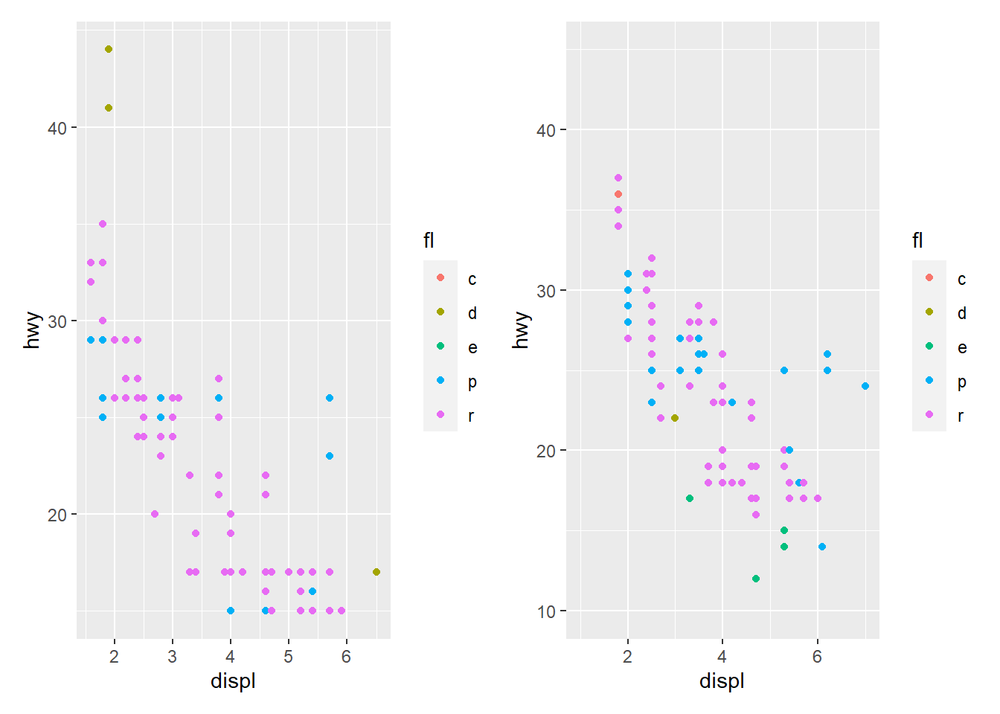

<!DOCTYPE html>
<html lang="es" xml:lang="es">
<head>

  <meta charset="utf-8" />
  <meta http-equiv="X-UA-Compatible" content="IE=edge" />
  <title>Capítulo 4 Gráficos - Parte II | Politica Economica II</title>
  <meta name="description" content="UNLP" />
  <meta name="generator" content="bookdown 0.35 and GitBook 2.6.7" />

  <meta property="og:title" content="Capítulo 4 Gráficos - Parte II | Politica Economica II" />
  <meta property="og:type" content="book" />
  
  <meta property="og:description" content="UNLP" />
  <meta name="github-repo" content="msangia/msangia.github" />

  <meta name="twitter:card" content="summary" />
  <meta name="twitter:title" content="Capítulo 4 Gráficos - Parte II | Politica Economica II" />
  <meta name="twitter:site" content="@msangia" />
  <meta name="twitter:description" content="UNLP" />
  

<meta name="author" content="Máximo Sangiácomo" />


  <meta name="viewport" content="width=device-width, initial-scale=1" />
  <meta name="apple-mobile-web-app-capable" content="yes" />
  <meta name="apple-mobile-web-app-status-bar-style" content="black" />
  
  
<link rel="prev" href="gph1.html"/>
<link rel="next" href="rmd.html"/>
<script src="libs/jquery-3.6.0/jquery-3.6.0.min.js"></script>
<script src="https://cdn.jsdelivr.net/npm/fuse.js@6.4.6/dist/fuse.min.js"></script>
<link href="libs/gitbook-2.6.7/css/style.css" rel="stylesheet" />
<link href="libs/gitbook-2.6.7/css/plugin-table.css" rel="stylesheet" />
<link href="libs/gitbook-2.6.7/css/plugin-bookdown.css" rel="stylesheet" />
<link href="libs/gitbook-2.6.7/css/plugin-highlight.css" rel="stylesheet" />
<link href="libs/gitbook-2.6.7/css/plugin-search.css" rel="stylesheet" />
<link href="libs/gitbook-2.6.7/css/plugin-fontsettings.css" rel="stylesheet" />
<link href="libs/gitbook-2.6.7/css/plugin-clipboard.css" rel="stylesheet" />


<link href="libs/anchor-sections-1.1.0/anchor-sections.css" rel="stylesheet" />
<link href="libs/anchor-sections-1.1.0/anchor-sections-hash.css" rel="stylesheet" />
<script src="libs/anchor-sections-1.1.0/anchor-sections.js"></script>
<html>
  <head>
	<link rel="shortcut icon" href="images/favicon.png" />
  </head>
  <body>
  </body>
</html>


<style type="text/css">
pre > code.sourceCode { white-space: pre; position: relative; }
pre > code.sourceCode > span { display: inline-block; line-height: 1.25; }
pre > code.sourceCode > span:empty { height: 1.2em; }
.sourceCode { overflow: visible; }
code.sourceCode > span { color: inherit; text-decoration: inherit; }
pre.sourceCode { margin: 0; }
@media screen {
div.sourceCode { overflow: auto; }
}
@media print {
pre > code.sourceCode { white-space: pre-wrap; }
pre > code.sourceCode > span { text-indent: -5em; padding-left: 5em; }
}
pre.numberSource code
  { counter-reset: source-line 0; }
pre.numberSource code > span
  { position: relative; left: -4em; counter-increment: source-line; }
pre.numberSource code > span > a:first-child::before
  { content: counter(source-line);
    position: relative; left: -1em; text-align: right; vertical-align: baseline;
    border: none; display: inline-block;
    -webkit-touch-callout: none; -webkit-user-select: none;
    -khtml-user-select: none; -moz-user-select: none;
    -ms-user-select: none; user-select: none;
    padding: 0 4px; width: 4em;
    color: #aaaaaa;
  }
pre.numberSource { margin-left: 3em; border-left: 1px solid #aaaaaa;  padding-left: 4px; }
div.sourceCode
  {   }
@media screen {
pre > code.sourceCode > span > a:first-child::before { text-decoration: underline; }
}
code span.al { color: #ff0000; font-weight: bold; } /* Alert */
code span.an { color: #60a0b0; font-weight: bold; font-style: italic; } /* Annotation */
code span.at { color: #7d9029; } /* Attribute */
code span.bn { color: #40a070; } /* BaseN */
code span.bu { color: #008000; } /* BuiltIn */
code span.cf { color: #007020; font-weight: bold; } /* ControlFlow */
code span.ch { color: #4070a0; } /* Char */
code span.cn { color: #880000; } /* Constant */
code span.co { color: #60a0b0; font-style: italic; } /* Comment */
code span.cv { color: #60a0b0; font-weight: bold; font-style: italic; } /* CommentVar */
code span.do { color: #ba2121; font-style: italic; } /* Documentation */
code span.dt { color: #902000; } /* DataType */
code span.dv { color: #40a070; } /* DecVal */
code span.er { color: #ff0000; font-weight: bold; } /* Error */
code span.ex { } /* Extension */
code span.fl { color: #40a070; } /* Float */
code span.fu { color: #06287e; } /* Function */
code span.im { color: #008000; font-weight: bold; } /* Import */
code span.in { color: #60a0b0; font-weight: bold; font-style: italic; } /* Information */
code span.kw { color: #007020; font-weight: bold; } /* Keyword */
code span.op { color: #666666; } /* Operator */
code span.ot { color: #007020; } /* Other */
code span.pp { color: #bc7a00; } /* Preprocessor */
code span.sc { color: #4070a0; } /* SpecialChar */
code span.ss { color: #bb6688; } /* SpecialString */
code span.st { color: #4070a0; } /* String */
code span.va { color: #19177c; } /* Variable */
code span.vs { color: #4070a0; } /* VerbatimString */
code span.wa { color: #60a0b0; font-weight: bold; font-style: italic; } /* Warning */
</style>

<style type="text/css">
  
  div.hanging-indent{margin-left: 1.5em; text-indent: -1.5em;}
</style>
<style type="text/css">
/* Used with Pandoc 2.11+ new --citeproc when CSL is used */
div.csl-bib-body { }
div.csl-entry {
  clear: both;
}
.hanging div.csl-entry {
  margin-left:2em;
  text-indent:-2em;
}
div.csl-left-margin {
  min-width:2em;
  float:left;
}
div.csl-right-inline {
  margin-left:2em;
  padding-left:1em;
}
div.csl-indent {
  margin-left: 2em;
}
</style>

<link rel="stylesheet" href="css/style.css" type="text/css" />
<link rel="stylesheet" href="css/r4ds.css" type="text/css" />
</head>

<body>


  <div class="book without-animation with-summary font-size-2 font-family-1" data-basepath=".">

    <div class="book-summary">
      <nav role="navigation">

<ul class="summary">
<li><a href="./">Politica Economica II - UNLP</a></li>

<li class="divider"></li>
<li class="chapter" data-level="" data-path="index.html"><a href="index.html"><i class="fa fa-check"></i>Descripcion del curso</a></li>
<li class="chapter" data-level="1" data-path="intro.html"><a href="intro.html"><i class="fa fa-check"></i><b>1</b> Introduccion a R</a>
<ul>
<li class="chapter" data-level="1.1" data-path="intro.html"><a href="intro.html#primeros-pasos"><i class="fa fa-check"></i><b>1.1</b> Primeros pasos</a></li>
<li class="chapter" data-level="1.2" data-path="intro.html"><a href="intro.html#busacar-ayuda"><i class="fa fa-check"></i><b>1.2</b> Busacar ayuda</a></li>
<li class="chapter" data-level="1.3" data-path="intro.html"><a href="intro.html#tipos-de-datos"><i class="fa fa-check"></i><b>1.3</b> Tipos de datos</a></li>
<li class="chapter" data-level="1.4" data-path="intro.html"><a href="intro.html#limpieza-de-memoria"><i class="fa fa-check"></i><b>1.4</b> Limpieza de memoria</a></li>
<li class="chapter" data-level="1.5" data-path="intro.html"><a href="intro.html#asignación-de-valores"><i class="fa fa-check"></i><b>1.5</b> Asignación de valores</a></li>
<li class="chapter" data-level="1.6" data-path="intro.html"><a href="intro.html#operadores-aritméticos"><i class="fa fa-check"></i><b>1.6</b> Operadores aritméticos</a></li>
<li class="chapter" data-level="1.7" data-path="intro.html"><a href="intro.html#operadores-relacionales"><i class="fa fa-check"></i><b>1.7</b> Operadores relacionales</a></li>
<li class="chapter" data-level="1.8" data-path="intro.html"><a href="intro.html#operadores-lógicos"><i class="fa fa-check"></i><b>1.8</b> Operadores lógicos</a></li>
<li class="chapter" data-level="1.9" data-path="intro.html"><a href="intro.html#vectores"><i class="fa fa-check"></i><b>1.9</b> Vectores</a></li>
<li class="chapter" data-level="1.10" data-path="intro.html"><a href="intro.html#secuencias"><i class="fa fa-check"></i><b>1.10</b> Secuencias</a></li>
<li class="chapter" data-level="1.11" data-path="intro.html"><a href="intro.html#factores"><i class="fa fa-check"></i><b>1.11</b> Factores</a></li>
<li class="chapter" data-level="1.12" data-path="intro.html"><a href="intro.html#matrices"><i class="fa fa-check"></i><b>1.12</b> Matrices</a></li>
<li class="chapter" data-level="1.13" data-path="intro.html"><a href="intro.html#listas"><i class="fa fa-check"></i><b>1.13</b> Listas</a></li>
<li class="chapter" data-level="1.14" data-path="intro.html"><a href="intro.html#data-frames"><i class="fa fa-check"></i><b>1.14</b> Data frames</a></li>
<li class="chapter" data-level="1.15" data-path="intro.html"><a href="intro.html#r-base"><i class="fa fa-check"></i><b>1.15</b> R base</a></li>
<li class="chapter" data-level="1.16" data-path="intro.html"><a href="intro.html#apply-lapply-y-tapply"><i class="fa fa-check"></i><b>1.16</b> apply, lapply y tapply</a></li>
<li class="chapter" data-level="1.17" data-path="intro.html"><a href="intro.html#map"><i class="fa fa-check"></i><b>1.17</b> Map</a></li>
<li class="chapter" data-level="1.18" data-path="intro.html"><a href="intro.html#loops"><i class="fa fa-check"></i><b>1.18</b> Loops</a></li>
<li class="chapter" data-level="1.19" data-path="intro.html"><a href="intro.html#condicionales"><i class="fa fa-check"></i><b>1.19</b> Condicionales</a></li>
<li class="chapter" data-level="1.20" data-path="intro.html"><a href="intro.html#funciones"><i class="fa fa-check"></i><b>1.20</b> Funciones</a>
<ul>
<li class="chapter" data-level="1.20.1" data-path="intro.html"><a href="intro.html#output-más-de-un-resultado"><i class="fa fa-check"></i><b>1.20.1</b> Output más de un resultado</a></li>
<li class="chapter" data-level="1.20.2" data-path="intro.html"><a href="intro.html#argumentos-con-valores-default"><i class="fa fa-check"></i><b>1.20.2</b> Argumentos con valores default</a></li>
</ul></li>
</ul></li>
<li class="chapter" data-level="2" data-path="bd.html"><a href="bd.html"><i class="fa fa-check"></i><b>2</b> Base de datos</a>
<ul>
<li class="chapter" data-level="2.1" data-path="bd.html"><a href="bd.html#directorio-de-trabajo"><i class="fa fa-check"></i><b>2.1</b> Directorio de trabajo</a></li>
<li class="chapter" data-level="2.2" data-path="bd.html"><a href="bd.html#cargar-datos"><i class="fa fa-check"></i><b>2.2</b> Cargar datos</a>
<ul>
<li class="chapter" data-level="2.2.1" data-path="bd.html"><a href="bd.html#ingrasar-datos-con-tidyverse"><i class="fa fa-check"></i><b>2.2.1</b> Ingrasar datos con <code>tidyverse</code></a></li>
<li class="chapter" data-level="2.2.2" data-path="bd.html"><a href="bd.html#bases-de-stata"><i class="fa fa-check"></i><b>2.2.2</b> Bases de Stata</a></li>
</ul></li>
<li class="chapter" data-level="2.3" data-path="bd.html"><a href="bd.html#problemas-de-imputación"><i class="fa fa-check"></i><b>2.3</b> Problemas de imputación</a></li>
<li class="chapter" data-level="2.4" data-path="bd.html"><a href="bd.html#exportar-datos"><i class="fa fa-check"></i><b>2.4</b> Exportar datos</a></li>
<li class="chapter" data-level="2.5" data-path="bd.html"><a href="bd.html#pipe"><i class="fa fa-check"></i><b>2.5</b> Pipe</a></li>
<li class="chapter" data-level="2.6" data-path="bd.html"><a href="bd.html#variables"><i class="fa fa-check"></i><b>2.6</b> Variables</a></li>
<li class="chapter" data-level="2.7" data-path="bd.html"><a href="bd.html#merge"><i class="fa fa-check"></i><b>2.7</b> Merge</a></li>
<li class="chapter" data-level="2.8" data-path="bd.html"><a href="bd.html#variables-group_by-mutate"><i class="fa fa-check"></i><b>2.8</b> Variables: group_by, mutate</a></li>
<li class="chapter" data-level="2.9" data-path="bd.html"><a href="bd.html#guardar-datos"><i class="fa fa-check"></i><b>2.9</b> Guardar datos</a></li>
<li class="chapter" data-level="2.10" data-path="bd.html"><a href="bd.html#valores-missing"><i class="fa fa-check"></i><b>2.10</b> Valores missing</a>
<ul>
<li class="chapter" data-level="2.10.1" data-path="bd.html"><a href="bd.html#eliminar-valores-missing"><i class="fa fa-check"></i><b>2.10.1</b> Eliminar valores missing</a></li>
</ul></li>
<li class="chapter" data-level="2.11" data-path="bd.html"><a href="bd.html#pivot-reshape"><i class="fa fa-check"></i><b>2.11</b> Pivot (Reshape)</a></li>
<li class="chapter" data-level="2.12" data-path="bd.html"><a href="bd.html#row-bind-append"><i class="fa fa-check"></i><b>2.12</b> Row bind (Append)</a></li>
<li class="chapter" data-level="2.13" data-path="bd.html"><a href="bd.html#strings"><i class="fa fa-check"></i><b>2.13</b> Strings</a></li>
<li class="chapter" data-level="2.14" data-path="bd.html"><a href="bd.html#fechas"><i class="fa fa-check"></i><b>2.14</b> Fechas</a>
<ul>
<li class="chapter" data-level="2.14.1" data-path="bd.html"><a href="bd.html#manipulación-de-fechas"><i class="fa fa-check"></i><b>2.14.1</b> Manipulación de fechas</a></li>
</ul></li>
<li class="chapter" data-level="2.15" data-path="bd.html"><a href="bd.html#análisis-de-datos"><i class="fa fa-check"></i><b>2.15</b> Análisis de datos</a>
<ul>
<li class="chapter" data-level="2.15.1" data-path="bd.html"><a href="bd.html#tablas"><i class="fa fa-check"></i><b>2.15.1</b> Tablas</a></li>
</ul></li>
<li class="chapter" data-level="2.16" data-path="bd.html"><a href="bd.html#group_by-summarise"><i class="fa fa-check"></i><b>2.16</b> group_by, summarise</a></li>
</ul></li>
<li class="chapter" data-level="3" data-path="gph1.html"><a href="gph1.html"><i class="fa fa-check"></i><b>3</b> Gráficos - Parte I</a>
<ul>
<li class="chapter" data-level="3.1" data-path="gph1.html"><a href="gph1.html#ggplot2"><i class="fa fa-check"></i><b>3.1</b> ggplot2</a></li>
<li class="chapter" data-level="3.2" data-path="gph1.html"><a href="gph1.html#estadísticas-con-ggplot2"><i class="fa fa-check"></i><b>3.2</b> Estadísticas con <code>ggplot2</code></a></li>
<li class="chapter" data-level="3.3" data-path="gph1.html"><a href="gph1.html#ggplot-position"><i class="fa fa-check"></i><b>3.3</b> GGPlot (position)</a></li>
<li class="chapter" data-level="3.4" data-path="gph1.html"><a href="gph1.html#time-series"><i class="fa fa-check"></i><b>3.4</b> Time series</a></li>
<li class="chapter" data-level="3.5" data-path="gph1.html"><a href="gph1.html#labels"><i class="fa fa-check"></i><b>3.5</b> Labels</a></li>
<li class="chapter" data-level="3.6" data-path="gph1.html"><a href="gph1.html#orden-de-factores-en-los-ejes-variables-string"><i class="fa fa-check"></i><b>3.6</b> Orden de factores en los ejes (variables string)</a></li>
<li class="chapter" data-level="3.7" data-path="gph1.html"><a href="gph1.html#guardar-un-gráfico"><i class="fa fa-check"></i><b>3.7</b> Guardar un gráfico</a></li>
</ul></li>
<li class="chapter" data-level="4" data-path="gph2.html"><a href="gph2.html"><i class="fa fa-check"></i><b>4</b> Gráficos - Parte II</a>
<ul>
<li class="chapter" data-level="4.1" data-path="gph2.html"><a href="gph2.html#títulos-en-los-ejes"><i class="fa fa-check"></i><b>4.1</b> Títulos en los ejes</a></li>
<li class="chapter" data-level="4.2" data-path="gph2.html"><a href="gph2.html#combianar-distintos-graficos"><i class="fa fa-check"></i><b>4.2</b> Combianar distintos graficos</a></li>
<li class="chapter" data-level="4.3" data-path="gph2.html"><a href="gph2.html#agrandar-una-parte-del-grafico"><i class="fa fa-check"></i><b>4.3</b> Agrandar una parte del grafico</a></li>
<li class="chapter" data-level="4.4" data-path="gph2.html"><a href="gph2.html#escala-de-colores-manual"><i class="fa fa-check"></i><b>4.4</b> Escala de colores manual</a></li>
<li class="chapter" data-level="4.5" data-path="gph2.html"><a href="gph2.html#límites-epacios-y-etiquetas"><i class="fa fa-check"></i><b>4.5</b> Límites, epacios y etiquetas</a></li>
<li class="chapter" data-level="4.6" data-path="gph2.html"><a href="gph2.html#leyendas"><i class="fa fa-check"></i><b>4.6</b> Leyendas</a></li>
<li class="chapter" data-level="4.7" data-path="gph2.html"><a href="gph2.html#posición-de-la-leyenda"><i class="fa fa-check"></i><b>4.7</b> Posición de la leyenda</a></li>
<li class="chapter" data-level="4.8" data-path="gph2.html"><a href="gph2.html#estadísticas"><i class="fa fa-check"></i><b>4.8</b> Estadísticas</a></li>
<li class="chapter" data-level="4.9" data-path="gph2.html"><a href="gph2.html#unir-leyendas"><i class="fa fa-check"></i><b>4.9</b> Unir leyendas</a></li>
<li class="chapter" data-level="4.10" data-path="gph2.html"><a href="gph2.html#separar-leyendas"><i class="fa fa-check"></i><b>4.10</b> Separar leyendas</a></li>
<li class="chapter" data-level="4.11" data-path="gph2.html"><a href="gph2.html#agrupar-y-desagrupar"><i class="fa fa-check"></i><b>4.11</b> Agrupar y desagrupar</a></li>
<li class="chapter" data-level="4.12" data-path="gph2.html"><a href="gph2.html#themes"><i class="fa fa-check"></i><b>4.12</b> Themes</a></li>
</ul></li>
<li class="chapter" data-level="5" data-path="rmd.html"><a href="rmd.html"><i class="fa fa-check"></i><b>5</b> R Markdown</a>
<ul>
<li class="chapter" data-level="5.1" data-path="rmd.html"><a href="rmd.html#informes-con-r-markdown"><i class="fa fa-check"></i><b>5.1</b> Informes con R Markdown</a>
<ul>
<li class="chapter" data-level="5.1.1" data-path="rmd.html"><a href="rmd.html#intrormd"><i class="fa fa-check"></i><b>5.1.1</b> Introduccion</a></li>
<li class="chapter" data-level="5.1.2" data-path="rmd.html"><a href="rmd.html#referencias-cruzadas"><i class="fa fa-check"></i><b>5.1.2</b> Referencias cruzadas</a></li>
<li class="chapter" data-level="5.1.3" data-path="rmd.html"><a href="rmd.html#regresion"><i class="fa fa-check"></i><b>5.1.3</b> Regresion</a></li>
<li class="chapter" data-level="5.1.4" data-path="rmd.html"><a href="rmd.html#bullets"><i class="fa fa-check"></i><b>5.1.4</b> Bullets</a></li>
<li class="chapter" data-level="" data-path="rmd.html"><a href="rmd.html#bibliografia"><i class="fa fa-check"></i>Bibliografia</a></li>
</ul></li>
</ul></li>
<li class="chapter" data-level="6" data-path="conceptos.html"><a href="conceptos.html"><i class="fa fa-check"></i><b>6</b> Conceptos generales</a>
<ul>
<li class="chapter" data-level="6.1" data-path="conceptos.html"><a href="conceptos.html#estimacion"><i class="fa fa-check"></i><b>6.1</b> Estimacion</a></li>
<li class="chapter" data-level="6.2" data-path="conceptos.html"><a href="conceptos.html#prediccion"><i class="fa fa-check"></i><b>6.2</b> Prediccion</a></li>
<li class="chapter" data-level="6.3" data-path="conceptos.html"><a href="conceptos.html#inferencia"><i class="fa fa-check"></i><b>6.3</b> Inferencia</a></li>
<li class="chapter" data-level="6.4" data-path="conceptos.html"><a href="conceptos.html#metodos-parametricos"><i class="fa fa-check"></i><b>6.4</b> Metodos parametricos</a></li>
<li class="chapter" data-level="6.5" data-path="conceptos.html"><a href="conceptos.html#metodos-no-parametricos"><i class="fa fa-check"></i><b>6.5</b> Metodos no parametricos</a></li>
<li class="chapter" data-level="6.6" data-path="conceptos.html"><a href="conceptos.html#evaluacion-de-la-precision-del-modelo"><i class="fa fa-check"></i><b>6.6</b> Evaluacion de la precision del modelo</a>
<ul>
<li class="chapter" data-level="6.6.1" data-path="conceptos.html"><a href="conceptos.html#ajuste"><i class="fa fa-check"></i><b>6.6.1</b> Calidad del ajuste</a></li>
<li class="chapter" data-level="6.6.2" data-path="conceptos.html"><a href="conceptos.html#trade-off-sesgo-varianza"><i class="fa fa-check"></i><b>6.6.2</b> Trade-off Sesgo-Varianza</a></li>
<li class="chapter" data-level="6.6.3" data-path="conceptos.html"><a href="conceptos.html#clasificacion"><i class="fa fa-check"></i><b>6.6.3</b> Clasificacion</a></li>
<li class="chapter" data-level="6.6.4" data-path="conceptos.html"><a href="conceptos.html#confusion"><i class="fa fa-check"></i><b>6.6.4</b> Matriz de confusion</a></li>
<li class="chapter" data-level="6.6.5" data-path="conceptos.html"><a href="conceptos.html#roc"><i class="fa fa-check"></i><b>6.6.5</b> Curva ROC</a></li>
</ul></li>
<li class="chapter" data-level="6.7" data-path="conceptos.html"><a href="conceptos.html#resampling-methods"><i class="fa fa-check"></i><b>6.7</b> Resampling Methods</a>
<ul>
<li class="chapter" data-level="6.7.1" data-path="conceptos.html"><a href="conceptos.html#cv"><i class="fa fa-check"></i><b>6.7.1</b> Cross Validation</a></li>
<li class="chapter" data-level="6.7.2" data-path="conceptos.html"><a href="conceptos.html#bootstrap"><i class="fa fa-check"></i><b>6.7.2</b> Bootstrap</a></li>
</ul></li>
<li class="chapter" data-level="6.8" data-path="conceptos.html"><a href="conceptos.html#resumen"><i class="fa fa-check"></i><b>6.8</b> Resumen</a></li>
</ul></li>
<li class="chapter" data-level="7" data-path="mco.html"><a href="mco.html"><i class="fa fa-check"></i><b>7</b> Regresion lineal</a>
<ul>
<li class="chapter" data-level="7.1" data-path="mco.html"><a href="mco.html#relacion-entre-estimacion-optima-y-prediccion-optima"><i class="fa fa-check"></i><b>7.1</b> Relacion entre estimacion optima y prediccion optima</a></li>
<li class="chapter" data-level="7.2" data-path="mco.html"><a href="mco.html#aplicacion-practica"><i class="fa fa-check"></i><b>7.2</b> Aplicacion practica</a></li>
</ul></li>
<li class="chapter" data-level="8" data-path="logit.html"><a href="logit.html"><i class="fa fa-check"></i><b>8</b> Logit</a>
<ul>
<li class="chapter" data-level="8.1" data-path="logit.html"><a href="logit.html#modelo-logit"><i class="fa fa-check"></i><b>8.1</b> Modelo <em>logit</em></a>
<ul>
<li class="chapter" data-level="8.1.1" data-path="logit.html"><a href="logit.html#interpretacion-de-coeficientes-en-el-modelo-logit"><i class="fa fa-check"></i><b>8.1.1</b> Interpretacion de coeficientes en el modelo <em>logit</em></a></li>
</ul></li>
<li class="chapter" data-level="8.2" data-path="logit.html"><a href="logit.html#aplicacion-practica-1"><i class="fa fa-check"></i><b>8.2</b> Aplicacion practica</a></li>
</ul></li>
<li class="chapter" data-level="9" data-path="arboles.html"><a href="arboles.html"><i class="fa fa-check"></i><b>9</b> Arboles de decision</a>
<ul>
<li class="chapter" data-level="9.1" data-path="arboles.html"><a href="arboles.html#classification-and-regression-tree-cart"><i class="fa fa-check"></i><b>9.1</b> <em>Classification and Regression Tree</em> (CART)</a></li>
<li class="chapter" data-level="9.2" data-path="arboles.html"><a href="arboles.html#bagging"><i class="fa fa-check"></i><b>9.2</b> Bagging</a></li>
<li class="chapter" data-level="9.3" data-path="arboles.html"><a href="arboles.html#random-forest"><i class="fa fa-check"></i><b>9.3</b> Random Forest</a></li>
</ul></li>
<li class="chapter" data-level="10" data-path="score.html"><a href="score.html"><i class="fa fa-check"></i><b>10</b> Trabajo Practico</a>
<ul>
<li class="chapter" data-level="10.1" data-path="score.html"><a href="score.html#reglas-del-trabajo-practico"><i class="fa fa-check"></i><b>10.1</b> Reglas del Trabajo practico</a></li>
<li class="chapter" data-level="10.2" data-path="score.html"><a href="score.html#enunciado-del-trabajo-practico"><i class="fa fa-check"></i><b>10.2</b> Enunciado del Trabajo Practico</a></li>
<li class="chapter" data-level="10.3" data-path="score.html"><a href="score.html#aplicacion-practica-2"><i class="fa fa-check"></i><b>10.3</b> Aplicacion practica</a></li>
<li class="chapter" data-level="10.4" data-path="score.html"><a href="score.html#grid-search"><i class="fa fa-check"></i><b>10.4</b> Grid search</a></li>
</ul></li>
<li class="chapter" data-level="" data-path="bibliografia-1.html"><a href="bibliografia-1.html"><i class="fa fa-check"></i>Bibliografia</a></li>
<li class="divider"></li>
<li><a href="./" target="blank">Maximo Sangiacomo</a></li>

</ul>

      </nav>
    </div>

    <div class="book-body">
      <div class="body-inner">
        <div class="book-header" role="navigation">
          <h1>
            <i class="fa fa-circle-o-notch fa-spin"></i><a href="./">Politica Economica II</a>
          </h1>
        </div>

        <div class="page-wrapper" tabindex="-1" role="main">
          <div class="page-inner">

            <section class="normal" id="section-">
<link href="css/style.css" rel="stylesheet">
<div class="hero-image-container"> 
  
</div>
<div id="gph2" class="section level1 hasAnchor" number="4">
<h1><span class="header-section-number">Capítulo 4</span> Gráficos - Parte II<a href="gph2.html#gph2" class="anchor-section" aria-label="Anchor link to header"></a></h1>
<div id="títulos-en-los-ejes" class="section level2 hasAnchor" number="4.1">
<h2><span class="header-section-number">4.1</span> Títulos en los ejes<a href="gph2.html#títulos-en-los-ejes" class="anchor-section" aria-label="Anchor link to header"></a></h2>
<p>Las expresiones matemáticas pueden incorporarse con el comando <code>quote()</code>. Las reglas que se utilizan para interpretar las expresiones se pueden encontrar escribiendo <code>?plotmath</code>.</p>
<div class="sourceCode" id="cb392"><pre class="sourceCode r"><code class="sourceCode r"><span id="cb392-1"><a href="gph2.html#cb392-1" tabindex="-1"></a>values <span class="ot">&lt;-</span> <span class="fu">seq</span>(<span class="at">from =</span> <span class="sc">-</span><span class="dv">2</span>, <span class="at">to =</span> <span class="dv">2</span>, <span class="at">by =</span> .<span class="dv">01</span>)</span>
<span id="cb392-2"><a href="gph2.html#cb392-2" tabindex="-1"></a>df <span class="ot">&lt;-</span> <span class="fu">data.frame</span>(<span class="at">x =</span> values, <span class="at">y =</span> values <span class="sc">^</span> <span class="dv">3</span>)</span>
<span id="cb392-3"><a href="gph2.html#cb392-3" tabindex="-1"></a><span class="fu">ggplot</span>(df, <span class="fu">aes</span>(x, y)) <span class="sc">+</span> </span>
<span id="cb392-4"><a href="gph2.html#cb392-4" tabindex="-1"></a>  <span class="fu">geom_path</span>() <span class="sc">+</span> </span>
<span id="cb392-5"><a href="gph2.html#cb392-5" tabindex="-1"></a>  <span class="fu">labs</span>(<span class="at">y =</span> <span class="fu">quote</span>(<span class="fu">f</span>(x) <span class="sc">==</span> x<span class="sc">^</span><span class="dv">3</span>))</span></code></pre></div>
<p></p>
<p>El tipo de letra se puede modificar con el <code>family</code> <em>aesthetic</em> que permite usar el nombre de una fuente, pero se requiere cierto cuidado. Solo hay tres tipos de letra que funcionan en todas partes: “sans” (predeterminada), “serif” o “mono”.</p>
<div class="sourceCode" id="cb393"><pre class="sourceCode r"><code class="sourceCode r"><span id="cb393-1"><a href="gph2.html#cb393-1" tabindex="-1"></a>df <span class="ot">&lt;-</span> <span class="fu">data.frame</span>(<span class="at">x =</span> <span class="dv">1</span>, <span class="at">y =</span> <span class="dv">3</span><span class="sc">:</span><span class="dv">1</span>, <span class="at">family =</span> <span class="fu">c</span>(<span class="st">&quot;sans&quot;</span>, <span class="st">&quot;serif&quot;</span>, <span class="st">&quot;mono&quot;</span>))</span>
<span id="cb393-2"><a href="gph2.html#cb393-2" tabindex="-1"></a><span class="fu">ggplot</span>(df, <span class="fu">aes</span>(x, y)) <span class="sc">+</span> </span>
<span id="cb393-3"><a href="gph2.html#cb393-3" tabindex="-1"></a>  <span class="fu">geom_text</span>(<span class="fu">aes</span>(<span class="at">label =</span> family, <span class="at">family =</span> family))</span></code></pre></div>
<p></p>
</div>
<div id="combianar-distintos-graficos" class="section level2 hasAnchor" number="4.2">
<h2><span class="header-section-number">4.2</span> Combianar distintos graficos<a href="gph2.html#combianar-distintos-graficos" class="anchor-section" aria-label="Anchor link to header"></a></h2>
<p><code>ggplot2</code> está pensado para la creación de gráficos individuales. Si bien la opción <code>facet</code> proporciona la posibilidad de producir varias tramas secundarias, todas ellas forman parte de la misma visualización principal, compartiendo capas, datos y escalas. Sin embargo, a menudo es necesario usar varias tramas diferentes para contar una historia. Existe una variedad de paquetes para organizar gráficos separados como por ejemplo <code>patchwork</code>.</p>
<div class="sourceCode" id="cb394"><pre class="sourceCode r"><code class="sourceCode r"><span id="cb394-1"><a href="gph2.html#cb394-1" tabindex="-1"></a>p1 <span class="ot">&lt;-</span> <span class="fu">ggplot</span>(mpg) <span class="sc">+</span> </span>
<span id="cb394-2"><a href="gph2.html#cb394-2" tabindex="-1"></a>  <span class="fu">geom_point</span>(<span class="fu">aes</span>(<span class="at">x =</span> displ, <span class="at">y =</span> hwy))</span>
<span id="cb394-3"><a href="gph2.html#cb394-3" tabindex="-1"></a></span>
<span id="cb394-4"><a href="gph2.html#cb394-4" tabindex="-1"></a>p2 <span class="ot">&lt;-</span> <span class="fu">ggplot</span>(mpg) <span class="sc">+</span> </span>
<span id="cb394-5"><a href="gph2.html#cb394-5" tabindex="-1"></a>  <span class="fu">geom_bar</span>(<span class="fu">aes</span>(<span class="at">x =</span> <span class="fu">as.character</span>(year), <span class="at">fill =</span> drv), <span class="at">position =</span> <span class="st">&quot;dodge&quot;</span>) <span class="sc">+</span> </span>
<span id="cb394-6"><a href="gph2.html#cb394-6" tabindex="-1"></a>  <span class="fu">labs</span>(<span class="at">x =</span> <span class="st">&quot;year&quot;</span>)</span>
<span id="cb394-7"><a href="gph2.html#cb394-7" tabindex="-1"></a></span>
<span id="cb394-8"><a href="gph2.html#cb394-8" tabindex="-1"></a>p3 <span class="ot">&lt;-</span> <span class="fu">ggplot</span>(mpg) <span class="sc">+</span> </span>
<span id="cb394-9"><a href="gph2.html#cb394-9" tabindex="-1"></a>  <span class="fu">geom_density</span>(<span class="fu">aes</span>(<span class="at">x =</span> hwy, <span class="at">fill =</span> drv), <span class="at">colour =</span> <span class="cn">NA</span>) <span class="sc">+</span> </span>
<span id="cb394-10"><a href="gph2.html#cb394-10" tabindex="-1"></a>  <span class="fu">facet_grid</span>(<span class="at">rows =</span> <span class="fu">vars</span>(drv))</span></code></pre></div>
<div class="sourceCode" id="cb395"><pre class="sourceCode r"><code class="sourceCode r"><span id="cb395-1"><a href="gph2.html#cb395-1" tabindex="-1"></a><span class="fu">library</span>(patchwork)</span>
<span id="cb395-2"><a href="gph2.html#cb395-2" tabindex="-1"></a>p1 <span class="sc">+</span> p2</span></code></pre></div>
<p></p>
<p>En la primera línea de abajo se muestra como ordenar 3 graficos en una grilla especifica y luego en agregar etiquetas a cada sub-gráfico que luego se utilizan para identificarlas en el texto. <code>ggplot2</code> tiene el elemento <code>tag</code> para realizar esto y <code>patchwork</code> ofrece funcionalidad para hacerlo automáticamente usando el argumento <code>tag_levels</code>. Puede generar niveles automáticos en caracteres latinos, números arábigos o números romanos.</p>
<div class="sourceCode" id="cb396"><pre class="sourceCode r"><code class="sourceCode r"><span id="cb396-1"><a href="gph2.html#cb396-1" tabindex="-1"></a>p123 <span class="ot">&lt;-</span> p1 <span class="sc">|</span> (p2 <span class="sc">/</span> p3)</span>
<span id="cb396-2"><a href="gph2.html#cb396-2" tabindex="-1"></a>p123 <span class="sc">+</span> <span class="fu">plot_annotation</span>(<span class="at">tag_levels =</span> <span class="st">&quot;I&quot;</span>) <span class="co"># Numeros romanos en mayuscula</span></span></code></pre></div>
<p></p>
<p>Una característica adicional es que es posible anidar para definir nuevos niveles de etiquetado:</p>
<div class="sourceCode" id="cb397"><pre class="sourceCode r"><code class="sourceCode r"><span id="cb397-1"><a href="gph2.html#cb397-1" tabindex="-1"></a>p123[[<span class="dv">2</span>]] <span class="ot">&lt;-</span> p123[[<span class="dv">2</span>]] <span class="sc">+</span> <span class="fu">plot_layout</span>(<span class="at">tag_level =</span> <span class="st">&quot;new&quot;</span>)</span>
<span id="cb397-2"><a href="gph2.html#cb397-2" tabindex="-1"></a>p123 <span class="sc">+</span> <span class="fu">plot_annotation</span>(<span class="at">tag_levels =</span> <span class="fu">c</span>(<span class="st">&quot;I&quot;</span>, <span class="st">&quot;a&quot;</span>))</span></code></pre></div>
<p></p>
<p>Si bien gran parte de la funcionalidad del mosaico se relaciona con la alineación de gráficos en una cuadrícula, también se puede hacer inserciones, es decir, gráficos colocados encima de otro gráfico. Se utiliza la función <code>inset_element()</code> que sirve para marcar el gráfico dado como un recuadro que se colocará en el gráfico principal, además de registrar la ubicación deseada, etc. El uso básico es así:</p>
<div class="sourceCode" id="cb398"><pre class="sourceCode r"><code class="sourceCode r"><span id="cb398-1"><a href="gph2.html#cb398-1" tabindex="-1"></a>p1 <span class="sc">+</span> <span class="fu">inset_element</span>(p2, <span class="at">left =</span> <span class="fl">0.5</span>, <span class="at">bottom =</span> <span class="fl">0.4</span>, <span class="at">right =</span> <span class="fl">0.9</span>, <span class="at">top =</span> <span class="fl">0.95</span>)</span></code></pre></div>
<p></p>
<p>Una característica de las inserciones es que se comportan como tramas secundarias de mosaico estándar. Esto significa que se pueden modificar después del montaje, por ejemplo usando <code>&amp;</code>:</p>
<div class="sourceCode" id="cb399"><pre class="sourceCode r"><code class="sourceCode r"><span id="cb399-1"><a href="gph2.html#cb399-1" tabindex="-1"></a>p12 <span class="ot">&lt;-</span> p1 <span class="sc">+</span> <span class="fu">inset_element</span>(p2, <span class="at">left =</span> <span class="fl">0.5</span>, <span class="at">bottom =</span> <span class="fl">0.5</span>, <span class="at">right =</span> <span class="fl">0.9</span>, <span class="at">top =</span> <span class="fl">0.95</span>)</span>
<span id="cb399-2"><a href="gph2.html#cb399-2" tabindex="-1"></a>p12 <span class="sc">&amp;</span> <span class="fu">theme_bw</span>()</span></code></pre></div>
<p></p>
</div>
<div id="agrandar-una-parte-del-grafico" class="section level2 hasAnchor" number="4.3">
<h2><span class="header-section-number">4.3</span> Agrandar una parte del grafico<a href="gph2.html#agrandar-una-parte-del-grafico" class="anchor-section" aria-label="Anchor link to header"></a></h2>
<p>Se puede reducir los límites de escala predeterminados para hacer <em>zoom</em>, pero se requiere cuidado: cuando trunca los límites de escala, algunos puntos de datos quedarán fuera de los límites establecidos y <code>ggplot2</code> tiene que tomar una decisión sobre qué hacer con estos puntos de datos. El comportamiento predeterminado en <code>ggplot2</code> es convertir cualquier valor de datos fuera de los límites de escala a <code>NA</code>. Esto significa que cambiar los límites de una escala no siempre es lo mismo que acercarse visualmente a una región del gráfico. Si su objetivo es acercar una parte de la gráfica, generalmente es mejor usar los argumentos <code>xlim</code> y <code>ylim</code> de <code>coord_cartesian()</code>:</p>
<div class="sourceCode" id="cb400"><pre class="sourceCode r"><code class="sourceCode r"><span id="cb400-1"><a href="gph2.html#cb400-1" tabindex="-1"></a>base <span class="ot">&lt;-</span> <span class="fu">ggplot</span>(mpg, <span class="fu">aes</span>(drv, hwy)) <span class="sc">+</span> </span>
<span id="cb400-2"><a href="gph2.html#cb400-2" tabindex="-1"></a>  <span class="fu">geom_hline</span>(<span class="at">yintercept =</span> <span class="dv">28</span>, <span class="at">colour =</span> <span class="st">&quot;red&quot;</span>) <span class="sc">+</span> </span>
<span id="cb400-3"><a href="gph2.html#cb400-3" tabindex="-1"></a>  <span class="fu">geom_boxplot</span>() </span>
<span id="cb400-4"><a href="gph2.html#cb400-4" tabindex="-1"></a></span>
<span id="cb400-5"><a href="gph2.html#cb400-5" tabindex="-1"></a>base <span class="sc">+</span> <span class="fu">coord_cartesian</span>(<span class="at">ylim =</span> <span class="fu">c</span>(<span class="dv">10</span>, <span class="dv">35</span>)) <span class="co"># hace lo esperado</span></span>
<span id="cb400-6"><a href="gph2.html#cb400-6" tabindex="-1"></a>base <span class="sc">+</span> <span class="fu">ylim</span>(<span class="dv">10</span>, <span class="dv">35</span>) <span class="co"># distorsiona el boxplot </span></span></code></pre></div>
<p></p>
</div>
<div id="escala-de-colores-manual" class="section level2 hasAnchor" number="4.4">
<h2><span class="header-section-number">4.4</span> Escala de colores manual<a href="gph2.html#escala-de-colores-manual" class="anchor-section" aria-label="Anchor link to header"></a></h2>
<p>Para definir colores propios se puede usar <code>scale_fill_manual()</code>. Esto puede ser útil si desea elegir colores que resalten una estructura de agrupación secundaria o llamar la atención sobre diferentes comparaciones.</p>
<div class="sourceCode" id="cb401"><pre class="sourceCode r"><code class="sourceCode r"><span id="cb401-1"><a href="gph2.html#cb401-1" tabindex="-1"></a>df <span class="ot">&lt;-</span> <span class="fu">data.frame</span>(<span class="at">x =</span> <span class="fu">c</span>(<span class="st">&quot;a&quot;</span>, <span class="st">&quot;b&quot;</span>, <span class="st">&quot;c&quot;</span>, <span class="st">&quot;d&quot;</span>), <span class="at">y =</span> <span class="fu">c</span>(<span class="dv">3</span>, <span class="dv">4</span>, <span class="dv">1</span>, <span class="dv">2</span>))</span>
<span id="cb401-2"><a href="gph2.html#cb401-2" tabindex="-1"></a>bars <span class="ot">&lt;-</span> <span class="fu">ggplot</span>(df, <span class="fu">aes</span>(x, y, <span class="at">fill =</span> x)) <span class="sc">+</span> </span>
<span id="cb401-3"><a href="gph2.html#cb401-3" tabindex="-1"></a>  <span class="fu">geom_bar</span>(<span class="at">stat =</span> <span class="st">&quot;identity&quot;</span>) <span class="sc">+</span> </span>
<span id="cb401-4"><a href="gph2.html#cb401-4" tabindex="-1"></a>  <span class="fu">labs</span>(<span class="at">x =</span> <span class="cn">NULL</span>, <span class="at">y =</span> <span class="cn">NULL</span>) <span class="sc">+</span></span>
<span id="cb401-5"><a href="gph2.html#cb401-5" tabindex="-1"></a>  <span class="fu">theme</span>(<span class="at">legend.position =</span> <span class="st">&quot;none&quot;</span>)</span></code></pre></div>
<div class="sourceCode" id="cb402"><pre class="sourceCode r"><code class="sourceCode r"><span id="cb402-1"><a href="gph2.html#cb402-1" tabindex="-1"></a>bars <span class="sc">+</span> </span>
<span id="cb402-2"><a href="gph2.html#cb402-2" tabindex="-1"></a>  <span class="fu">scale_fill_manual</span>(</span>
<span id="cb402-3"><a href="gph2.html#cb402-3" tabindex="-1"></a>    <span class="at">values =</span> <span class="fu">c</span>(<span class="st">&quot;tomato1&quot;</span>, <span class="st">&quot;tomato2&quot;</span>, <span class="st">&quot;tomato3&quot;</span>, <span class="st">&quot;tomato4&quot;</span>)</span>
<span id="cb402-4"><a href="gph2.html#cb402-4" tabindex="-1"></a>  )</span>
<span id="cb402-5"><a href="gph2.html#cb402-5" tabindex="-1"></a></span>
<span id="cb402-6"><a href="gph2.html#cb402-6" tabindex="-1"></a>bars <span class="sc">+</span> </span>
<span id="cb402-7"><a href="gph2.html#cb402-7" tabindex="-1"></a>  <span class="fu">scale_fill_manual</span>(</span>
<span id="cb402-8"><a href="gph2.html#cb402-8" tabindex="-1"></a>    <span class="at">values =</span> <span class="fu">c</span>(</span>
<span id="cb402-9"><a href="gph2.html#cb402-9" tabindex="-1"></a>      <span class="st">&quot;d&quot;</span> <span class="ot">=</span> <span class="st">&quot;grey&quot;</span>,</span>
<span id="cb402-10"><a href="gph2.html#cb402-10" tabindex="-1"></a>      <span class="st">&quot;c&quot;</span> <span class="ot">=</span> <span class="st">&quot;grey&quot;</span>,</span>
<span id="cb402-11"><a href="gph2.html#cb402-11" tabindex="-1"></a>      <span class="st">&quot;b&quot;</span> <span class="ot">=</span> <span class="st">&quot;black&quot;</span>,</span>
<span id="cb402-12"><a href="gph2.html#cb402-12" tabindex="-1"></a>      <span class="st">&quot;a&quot;</span> <span class="ot">=</span> <span class="st">&quot;grey&quot;</span></span>
<span id="cb402-13"><a href="gph2.html#cb402-13" tabindex="-1"></a>    )</span>
<span id="cb402-14"><a href="gph2.html#cb402-14" tabindex="-1"></a>  )</span></code></pre></div>
<p></p>
</div>
<div id="límites-epacios-y-etiquetas" class="section level2 hasAnchor" number="4.5">
<h2><span class="header-section-number">4.5</span> Límites, epacios y etiquetas<a href="gph2.html#límites-epacios-y-etiquetas" class="anchor-section" aria-label="Anchor link to header"></a></h2>
<p>Los límites de escala para escalas de color discretas se pueden establecer usando el argumento <code>limits</code> para el argumento de escala, o usando la función auxiliar <code>lims()</code>. Esto puede ser importante cuando la misma variable se representa en diferentes gráficos y desea asegurarse de que los colores sean consistentes en todos los gráficos. El color representa el tipo de combustible que puede ser: regular, etanol, diesel, premium o gas natural comprimido.</p>
<div class="sourceCode" id="cb403"><pre class="sourceCode r"><code class="sourceCode r"><span id="cb403-1"><a href="gph2.html#cb403-1" tabindex="-1"></a>mpg_99 <span class="ot">&lt;-</span> mpg <span class="sc">%&gt;%</span> dplyr<span class="sc">::</span><span class="fu">filter</span>(year <span class="sc">==</span> <span class="dv">1999</span>)</span>
<span id="cb403-2"><a href="gph2.html#cb403-2" tabindex="-1"></a>mpg_08 <span class="ot">&lt;-</span> mpg <span class="sc">%&gt;%</span> dplyr<span class="sc">::</span><span class="fu">filter</span>(year <span class="sc">==</span> <span class="dv">2008</span>)</span>
<span id="cb403-3"><a href="gph2.html#cb403-3" tabindex="-1"></a></span>
<span id="cb403-4"><a href="gph2.html#cb403-4" tabindex="-1"></a>base_99 <span class="ot">&lt;-</span> <span class="fu">ggplot</span>(mpg_99, <span class="fu">aes</span>(displ, hwy, <span class="at">colour =</span> fl)) <span class="sc">+</span> <span class="fu">geom_point</span>() </span>
<span id="cb403-5"><a href="gph2.html#cb403-5" tabindex="-1"></a>base_08 <span class="ot">&lt;-</span> <span class="fu">ggplot</span>(mpg_08, <span class="fu">aes</span>(displ, hwy, <span class="at">colour =</span> fl)) <span class="sc">+</span> <span class="fu">geom_point</span>() </span>
<span id="cb403-6"><a href="gph2.html#cb403-6" tabindex="-1"></a></span>
<span id="cb403-7"><a href="gph2.html#cb403-7" tabindex="-1"></a>base_99</span>
<span id="cb403-8"><a href="gph2.html#cb403-8" tabindex="-1"></a>base_08</span></code></pre></div>
<p></p>
<p>Cada trama tiene sentido por sí sola, pero la comparación visual entre las dos es difícil. Los límites de los ejes son diferentes, y debido a que en los datos de 1998 solo se representan los combustibles regulares, premium y diesel, los colores se asignan de manera inconsistente. Para asegurar un mapeo consistente para la estética del color, podemos usar <code>lims()</code> para establecer manualmente los límites.</p>
<div class="sourceCode" id="cb404"><pre class="sourceCode r"><code class="sourceCode r"><span id="cb404-1"><a href="gph2.html#cb404-1" tabindex="-1"></a>base_99 <span class="sc">+</span> <span class="fu">lims</span>(<span class="at">colour =</span> <span class="fu">c</span>(<span class="st">&quot;c&quot;</span>, <span class="st">&quot;d&quot;</span>, <span class="st">&quot;e&quot;</span>, <span class="st">&quot;p&quot;</span>, <span class="st">&quot;r&quot;</span>))</span>
<span id="cb404-2"><a href="gph2.html#cb404-2" tabindex="-1"></a>base_08 <span class="sc">+</span> <span class="fu">lims</span>(<span class="at">colour =</span> <span class="fu">c</span>(<span class="st">&quot;c&quot;</span>, <span class="st">&quot;d&quot;</span>, <span class="st">&quot;e&quot;</span>, <span class="st">&quot;p&quot;</span>, <span class="st">&quot;r&quot;</span>))</span></code></pre></div>
<p></p>
<p>Lo bueno de <code>lims()</code> es que podemos establecer los límites para múltiples estéticas a la vez. Para asegurarnos de que <span class="math inline">\(x\)</span>, <span class="math inline">\(y\)</span> y <code>colour</code> usen límites consistentes, podemos hacer:</p>
<div class="sourceCode" id="cb405"><pre class="sourceCode r"><code class="sourceCode r"><span id="cb405-1"><a href="gph2.html#cb405-1" tabindex="-1"></a>base_99 <span class="sc">+</span> </span>
<span id="cb405-2"><a href="gph2.html#cb405-2" tabindex="-1"></a>  <span class="fu">lims</span>(</span>
<span id="cb405-3"><a href="gph2.html#cb405-3" tabindex="-1"></a>    <span class="at">x =</span> <span class="fu">c</span>(<span class="dv">1</span>, <span class="dv">7</span>), </span>
<span id="cb405-4"><a href="gph2.html#cb405-4" tabindex="-1"></a>    <span class="at">y =</span> <span class="fu">c</span>(<span class="dv">10</span>, <span class="dv">45</span>), </span>
<span id="cb405-5"><a href="gph2.html#cb405-5" tabindex="-1"></a>    <span class="at">colour =</span> <span class="fu">c</span>(<span class="st">&quot;c&quot;</span>, <span class="st">&quot;d&quot;</span>, <span class="st">&quot;e&quot;</span>, <span class="st">&quot;p&quot;</span>, <span class="st">&quot;r&quot;</span>)</span>
<span id="cb405-6"><a href="gph2.html#cb405-6" tabindex="-1"></a>  )</span>
<span id="cb405-7"><a href="gph2.html#cb405-7" tabindex="-1"></a></span>
<span id="cb405-8"><a href="gph2.html#cb405-8" tabindex="-1"></a>base_08 <span class="sc">+</span> </span>
<span id="cb405-9"><a href="gph2.html#cb405-9" tabindex="-1"></a>  <span class="fu">lims</span>(</span>
<span id="cb405-10"><a href="gph2.html#cb405-10" tabindex="-1"></a>    <span class="at">x =</span> <span class="fu">c</span>(<span class="dv">1</span>, <span class="dv">7</span>), </span>
<span id="cb405-11"><a href="gph2.html#cb405-11" tabindex="-1"></a>    <span class="at">y =</span> <span class="fu">c</span>(<span class="dv">10</span>, <span class="dv">45</span>), </span>
<span id="cb405-12"><a href="gph2.html#cb405-12" tabindex="-1"></a>    <span class="at">colour =</span> <span class="fu">c</span>(<span class="st">&quot;c&quot;</span>, <span class="st">&quot;d&quot;</span>, <span class="st">&quot;e&quot;</span>, <span class="st">&quot;p&quot;</span>, <span class="st">&quot;r&quot;</span>)</span>
<span id="cb405-13"><a href="gph2.html#cb405-13" tabindex="-1"></a>  )</span></code></pre></div>
<p></p>
<p>Hay dos limitaciones potenciales para estas grillas. En primer lugar, si bien establecer los límites de escala garantiza que los colores se asignen de manera idéntica en ambos gráficos, también significa que el gráfico de los datos de 1999 muestra etiquetas para los cinco tipos de combustible, a pesar de que no se usaban combustibles de etanol y gas natural comprimido. Podemos abordar esto configurando manualmente los saltos de escala, asegurándonos de que solo se muestren en la leyenda los tipos de combustible que aparecen en los datos. La segunda limitación es que las etiquetas no son particularmente útiles, lo que podemos solucionar especificándolas manualmente. Al configurar múltiples propiedades de una sola escala, puede ser más útil personalizar usando los argumentos de la función de escala en lugar de usar la función auxiliar <code>lims()</code>:</p>
<div class="sourceCode" id="cb406"><pre class="sourceCode r"><code class="sourceCode r"><span id="cb406-1"><a href="gph2.html#cb406-1" tabindex="-1"></a>base_99 <span class="sc">+</span> </span>
<span id="cb406-2"><a href="gph2.html#cb406-2" tabindex="-1"></a>  <span class="fu">scale_color_discrete</span>(</span>
<span id="cb406-3"><a href="gph2.html#cb406-3" tabindex="-1"></a>    <span class="at">limits =</span> <span class="fu">c</span>(<span class="st">&quot;c&quot;</span>, <span class="st">&quot;d&quot;</span>, <span class="st">&quot;e&quot;</span>, <span class="st">&quot;p&quot;</span>, <span class="st">&quot;r&quot;</span>), </span>
<span id="cb406-4"><a href="gph2.html#cb406-4" tabindex="-1"></a>    <span class="at">breaks =</span> <span class="fu">c</span>(<span class="st">&quot;d&quot;</span>, <span class="st">&quot;p&quot;</span>, <span class="st">&quot;r&quot;</span>),</span>
<span id="cb406-5"><a href="gph2.html#cb406-5" tabindex="-1"></a>    <span class="at">labels =</span> <span class="fu">c</span>(<span class="st">&quot;diesel&quot;</span>, <span class="st">&quot;premium&quot;</span>, <span class="st">&quot;regular&quot;</span>)</span>
<span id="cb406-6"><a href="gph2.html#cb406-6" tabindex="-1"></a>  )</span></code></pre></div>
<p></p>
<p>Sin embargo, no hay nada que impida usar <code>lims()</code> para controlar los límites estéticos de la posición, mientras se usa <code>scale_colour_discrete()</code> para ejercer un control más detallado sobre la estética del color:</p>
<div class="sourceCode" id="cb407"><pre class="sourceCode r"><code class="sourceCode r"><span id="cb407-1"><a href="gph2.html#cb407-1" tabindex="-1"></a>base_99 <span class="sc">+</span> </span>
<span id="cb407-2"><a href="gph2.html#cb407-2" tabindex="-1"></a>  <span class="fu">lims</span>(<span class="at">x =</span> <span class="fu">c</span>(<span class="dv">1</span>, <span class="dv">7</span>), <span class="at">y =</span> <span class="fu">c</span>(<span class="dv">10</span>, <span class="dv">45</span>)) <span class="sc">+</span></span>
<span id="cb407-3"><a href="gph2.html#cb407-3" tabindex="-1"></a>  <span class="fu">scale_color_discrete</span>(</span>
<span id="cb407-4"><a href="gph2.html#cb407-4" tabindex="-1"></a>    <span class="at">limits =</span> <span class="fu">c</span>(<span class="st">&quot;c&quot;</span>, <span class="st">&quot;d&quot;</span>, <span class="st">&quot;e&quot;</span>, <span class="st">&quot;p&quot;</span>, <span class="st">&quot;r&quot;</span>), </span>
<span id="cb407-5"><a href="gph2.html#cb407-5" tabindex="-1"></a>    <span class="at">breaks =</span> <span class="fu">c</span>(<span class="st">&quot;d&quot;</span>, <span class="st">&quot;p&quot;</span>, <span class="st">&quot;r&quot;</span>),</span>
<span id="cb407-6"><a href="gph2.html#cb407-6" tabindex="-1"></a>    <span class="at">labels =</span> <span class="fu">c</span>(<span class="st">&quot;diesel&quot;</span>, <span class="st">&quot;premium&quot;</span>, <span class="st">&quot;regular&quot;</span>)</span>
<span id="cb407-7"><a href="gph2.html#cb407-7" tabindex="-1"></a>  )</span>
<span id="cb407-8"><a href="gph2.html#cb407-8" tabindex="-1"></a></span>
<span id="cb407-9"><a href="gph2.html#cb407-9" tabindex="-1"></a>base_08 <span class="sc">+</span> </span>
<span id="cb407-10"><a href="gph2.html#cb407-10" tabindex="-1"></a>  <span class="fu">lims</span>(<span class="at">x =</span> <span class="fu">c</span>(<span class="dv">1</span>, <span class="dv">7</span>), <span class="at">y =</span> <span class="fu">c</span>(<span class="dv">10</span>, <span class="dv">45</span>)) <span class="sc">+</span></span>
<span id="cb407-11"><a href="gph2.html#cb407-11" tabindex="-1"></a>  <span class="fu">scale_color_discrete</span>(</span>
<span id="cb407-12"><a href="gph2.html#cb407-12" tabindex="-1"></a>    <span class="at">limits =</span> <span class="fu">c</span>(<span class="st">&quot;c&quot;</span>, <span class="st">&quot;d&quot;</span>, <span class="st">&quot;e&quot;</span>, <span class="st">&quot;p&quot;</span>, <span class="st">&quot;r&quot;</span>), </span>
<span id="cb407-13"><a href="gph2.html#cb407-13" tabindex="-1"></a>    <span class="at">labels =</span> <span class="fu">c</span>(<span class="st">&quot;compressed&quot;</span>, <span class="st">&quot;diesel&quot;</span>, <span class="st">&quot;ethanol&quot;</span>, <span class="st">&quot;premium&quot;</span>, <span class="st">&quot;regular&quot;</span>)</span>
<span id="cb407-14"><a href="gph2.html#cb407-14" tabindex="-1"></a>  )</span></code></pre></div>
<p></p>
</div>
<div id="leyendas" class="section level2 hasAnchor" number="4.6">
<h2><span class="header-section-number">4.6</span> Leyendas<a href="gph2.html#leyendas" class="anchor-section" aria-label="Anchor link to header"></a></h2>
<p>Las leyendas para escalas de colores discretas se pueden personalizar usando el argumento de guía para la función de escala o con la función auxiliar <code>guides()</code>, la leyenda predeterminada muestra claves individuales en una tabla, que se puede personalizar usando <code>guide_legend()</code>. Las opciones más útiles son:</p>
<ul>
<li><code>nrow</code> o <code>ncol</code> que especifican las dimensiones de la tabla. <code>byrow</code> controla cómo se llena la tabla: <code>FALSE</code> la llena por columna (el valor predeterminado), <code>TRUE</code> la llena por fila.</li>
</ul>
<div class="sourceCode" id="cb408"><pre class="sourceCode r"><code class="sourceCode r"><span id="cb408-1"><a href="gph2.html#cb408-1" tabindex="-1"></a>base <span class="ot">&lt;-</span> <span class="fu">ggplot</span>(mpg, <span class="fu">aes</span>(drv, <span class="at">fill =</span> <span class="fu">factor</span>(cyl))) <span class="sc">+</span> <span class="fu">geom_bar</span>() </span>
<span id="cb408-2"><a href="gph2.html#cb408-2" tabindex="-1"></a></span>
<span id="cb408-3"><a href="gph2.html#cb408-3" tabindex="-1"></a>base</span>
<span id="cb408-4"><a href="gph2.html#cb408-4" tabindex="-1"></a>base <span class="sc">+</span> <span class="fu">guides</span>(<span class="at">fill =</span> <span class="fu">guide_legend</span>(<span class="at">ncol =</span> <span class="dv">2</span>))</span>
<span id="cb408-5"><a href="gph2.html#cb408-5" tabindex="-1"></a>base <span class="sc">+</span> <span class="fu">guides</span>(<span class="at">fill =</span> <span class="fu">guide_legend</span>(<span class="at">ncol =</span> <span class="dv">2</span>, <span class="at">byrow =</span> <span class="cn">TRUE</span>))</span></code></pre></div>
<p></p>
<ul>
<li><code>override.aes</code>: es útil cuando desea que los elementos de la leyenda se muestren de forma diferente a las <code>geoms</code> del gráfico. Esto suele ser necesario cuando ha utilizado transparencia o tamaño para lidiar con superposiciones.</li>
</ul>
<div class="sourceCode" id="cb409"><pre class="sourceCode r"><code class="sourceCode r"><span id="cb409-1"><a href="gph2.html#cb409-1" tabindex="-1"></a>base <span class="ot">&lt;-</span> <span class="fu">ggplot</span>(mpg, <span class="fu">aes</span>(displ, hwy, <span class="at">colour =</span> drv)) <span class="sc">+</span></span>
<span id="cb409-2"><a href="gph2.html#cb409-2" tabindex="-1"></a>  <span class="fu">geom_point</span>(<span class="at">size =</span> <span class="dv">4</span>, <span class="at">alpha =</span> .<span class="dv">2</span>, <span class="at">stroke =</span> <span class="dv">0</span>)</span>
<span id="cb409-3"><a href="gph2.html#cb409-3" tabindex="-1"></a></span>
<span id="cb409-4"><a href="gph2.html#cb409-4" tabindex="-1"></a>base <span class="sc">+</span> <span class="fu">guides</span>(<span class="at">colour =</span> <span class="fu">guide_legend</span>())</span>
<span id="cb409-5"><a href="gph2.html#cb409-5" tabindex="-1"></a>base <span class="sc">+</span> <span class="fu">guides</span>(<span class="at">colour =</span> <span class="fu">guide_legend</span>(<span class="at">override.aes =</span> <span class="fu">list</span>(<span class="at">alpha =</span> <span class="dv">1</span>)))</span></code></pre></div>
<p></p>
</div>
<div id="posición-de-la-leyenda" class="section level2 hasAnchor" number="4.7">
<h2><span class="header-section-number">4.7</span> Posición de la leyenda<a href="gph2.html#posición-de-la-leyenda" class="anchor-section" aria-label="Anchor link to header"></a></h2>
<p>Una serie de configuraciones que afectan la visualización general de las leyendas se controlan a través del sistema <code>theme()</code>. La posición y la justificación de las leyendas están controladas por la configuración del <code>legend.position</code>, que toma los valores “right”, “left”, “top”, “bottom”, or “none” (sin leyenda).</p>
<div class="sourceCode" id="cb410"><pre class="sourceCode r"><code class="sourceCode r"><span id="cb410-1"><a href="gph2.html#cb410-1" tabindex="-1"></a>toy <span class="ot">&lt;-</span> <span class="fu">data.frame</span>(</span>
<span id="cb410-2"><a href="gph2.html#cb410-2" tabindex="-1"></a>  <span class="at">const =</span> <span class="dv">1</span>, </span>
<span id="cb410-3"><a href="gph2.html#cb410-3" tabindex="-1"></a>  <span class="at">up =</span> <span class="dv">1</span><span class="sc">:</span><span class="dv">4</span>,</span>
<span id="cb410-4"><a href="gph2.html#cb410-4" tabindex="-1"></a>  <span class="at">txt =</span> letters[<span class="dv">1</span><span class="sc">:</span><span class="dv">4</span>], </span>
<span id="cb410-5"><a href="gph2.html#cb410-5" tabindex="-1"></a>  <span class="at">big =</span> (<span class="dv">1</span><span class="sc">:</span><span class="dv">4</span>)<span class="sc">*</span><span class="dv">1000</span>,</span>
<span id="cb410-6"><a href="gph2.html#cb410-6" tabindex="-1"></a>  <span class="at">log =</span> <span class="fu">c</span>(<span class="dv">2</span>, <span class="dv">5</span>, <span class="dv">10</span>, <span class="dv">2000</span>)</span>
<span id="cb410-7"><a href="gph2.html#cb410-7" tabindex="-1"></a>)</span>
<span id="cb410-8"><a href="gph2.html#cb410-8" tabindex="-1"></a></span>
<span id="cb410-9"><a href="gph2.html#cb410-9" tabindex="-1"></a>base <span class="ot">&lt;-</span> <span class="fu">ggplot</span>(toy, <span class="fu">aes</span>(up, up)) <span class="sc">+</span> </span>
<span id="cb410-10"><a href="gph2.html#cb410-10" tabindex="-1"></a>  <span class="fu">geom_point</span>(<span class="fu">aes</span>(<span class="at">colour =</span> txt), <span class="at">size =</span> <span class="dv">3</span>) <span class="sc">+</span> </span>
<span id="cb410-11"><a href="gph2.html#cb410-11" tabindex="-1"></a>  <span class="fu">xlab</span>(<span class="cn">NULL</span>) <span class="sc">+</span> </span>
<span id="cb410-12"><a href="gph2.html#cb410-12" tabindex="-1"></a>  <span class="fu">ylab</span>(<span class="cn">NULL</span>)</span>
<span id="cb410-13"><a href="gph2.html#cb410-13" tabindex="-1"></a></span>
<span id="cb410-14"><a href="gph2.html#cb410-14" tabindex="-1"></a>base <span class="sc">+</span> <span class="fu">theme</span>(<span class="at">legend.position =</span> <span class="st">&quot;left&quot;</span>)</span>
<span id="cb410-15"><a href="gph2.html#cb410-15" tabindex="-1"></a>base <span class="sc">+</span> <span class="fu">theme</span>(<span class="at">legend.position =</span> <span class="st">&quot;right&quot;</span>) <span class="co"># the default </span></span>
<span id="cb410-16"><a href="gph2.html#cb410-16" tabindex="-1"></a>base <span class="sc">+</span> <span class="fu">theme</span>(<span class="at">legend.position =</span> <span class="st">&quot;bottom&quot;</span>)</span>
<span id="cb410-17"><a href="gph2.html#cb410-17" tabindex="-1"></a>base <span class="sc">+</span> <span class="fu">theme</span>(<span class="at">legend.position =</span> <span class="st">&quot;none&quot;</span>)</span></code></pre></div>
<p></p>
<p>Alternativamente, si hay mucho espacio en blanco en el gráfico, se puede colocar la leyenda dentro del gráfico. Configurando <code>legend.position</code> con un vector numérico de longitud dos. Los números representan una ubicación relativa en el área del panel: <code>c(0, 1)</code> es la esquina superior izquierda y <code>c(1, 0)</code> es la esquina inferior derecha. Se define a qué esquina de la leyenda se refiere <code>legend.position</code> con <code>legend.justification</code>, que se especifica de manera similar. Colocar la leyenda exactamente donde lo desea requiere mucho ensayo y error.</p>
<div class="sourceCode" id="cb411"><pre class="sourceCode r"><code class="sourceCode r"><span id="cb411-1"><a href="gph2.html#cb411-1" tabindex="-1"></a>base <span class="ot">&lt;-</span> <span class="fu">ggplot</span>(toy, <span class="fu">aes</span>(up, up)) <span class="sc">+</span> </span>
<span id="cb411-2"><a href="gph2.html#cb411-2" tabindex="-1"></a>  <span class="fu">geom_point</span>(<span class="fu">aes</span>(<span class="at">colour =</span> txt), <span class="at">size =</span> <span class="dv">3</span>)</span>
<span id="cb411-3"><a href="gph2.html#cb411-3" tabindex="-1"></a></span>
<span id="cb411-4"><a href="gph2.html#cb411-4" tabindex="-1"></a>base <span class="sc">+</span> </span>
<span id="cb411-5"><a href="gph2.html#cb411-5" tabindex="-1"></a>  <span class="fu">theme</span>(</span>
<span id="cb411-6"><a href="gph2.html#cb411-6" tabindex="-1"></a>    <span class="at">legend.position =</span> <span class="fu">c</span>(<span class="dv">0</span>, <span class="dv">1</span>), </span>
<span id="cb411-7"><a href="gph2.html#cb411-7" tabindex="-1"></a>    <span class="at">legend.justification =</span> <span class="fu">c</span>(<span class="dv">0</span>, <span class="dv">1</span>)</span>
<span id="cb411-8"><a href="gph2.html#cb411-8" tabindex="-1"></a>  )</span>
<span id="cb411-9"><a href="gph2.html#cb411-9" tabindex="-1"></a></span>
<span id="cb411-10"><a href="gph2.html#cb411-10" tabindex="-1"></a>base <span class="sc">+</span> </span>
<span id="cb411-11"><a href="gph2.html#cb411-11" tabindex="-1"></a>  <span class="fu">theme</span>(</span>
<span id="cb411-12"><a href="gph2.html#cb411-12" tabindex="-1"></a>    <span class="at">legend.position =</span> <span class="fu">c</span>(<span class="fl">0.5</span>, <span class="fl">0.5</span>), </span>
<span id="cb411-13"><a href="gph2.html#cb411-13" tabindex="-1"></a>    <span class="at">legend.justification =</span> <span class="fu">c</span>(<span class="fl">0.5</span>, <span class="fl">0.5</span>)</span>
<span id="cb411-14"><a href="gph2.html#cb411-14" tabindex="-1"></a>  )</span>
<span id="cb411-15"><a href="gph2.html#cb411-15" tabindex="-1"></a></span>
<span id="cb411-16"><a href="gph2.html#cb411-16" tabindex="-1"></a>base <span class="sc">+</span> </span>
<span id="cb411-17"><a href="gph2.html#cb411-17" tabindex="-1"></a>  <span class="fu">theme</span>(</span>
<span id="cb411-18"><a href="gph2.html#cb411-18" tabindex="-1"></a>    <span class="at">legend.position =</span> <span class="fu">c</span>(<span class="dv">1</span>, <span class="dv">0</span>), </span>
<span id="cb411-19"><a href="gph2.html#cb411-19" tabindex="-1"></a>    <span class="at">legend.justification =</span> <span class="fu">c</span>(<span class="dv">1</span>, <span class="dv">0</span>)</span>
<span id="cb411-20"><a href="gph2.html#cb411-20" tabindex="-1"></a>  )</span></code></pre></div>
<p></p>
</div>
<div id="estadísticas" class="section level2 hasAnchor" number="4.8">
<h2><span class="header-section-number">4.8</span> Estadísticas<a href="gph2.html#estadísticas" class="anchor-section" aria-label="Anchor link to header"></a></h2>
<p>Una transformación estadística, o <strong>stat</strong>, transforma los datos, normalmente resumiéndolos de alguna manera. Por ejemplo, una estadística útil es el <code>smoother</code>, que calcula la media suavizada de <span class="math inline">\(y\)</span>, condicional en <span class="math inline">\(x\)</span>. Algunas alternativas son:</p>
<ul>
<li><p>stat_bin(): geom_bar(), geom_freqpoly(), geom_histogram()</p></li>
<li><p>stat_bin2d(): geom_bin2d()</p></li>
<li><p>stat_bindot(): geom_dotplot()</p></li>
<li><p>stat_binhex(): geom_hex()</p></li>
<li><p>stat_boxplot(): geom_boxplot()</p></li>
<li><p>stat_contour(): geom_contour()</p></li>
<li><p>stat_quantile(): geom_quantile()</p></li>
<li><p>stat_smooth(): geom_smooth()</p></li>
<li><p>stat_sum(): geom_count()</p></li>
</ul>
<div class="sourceCode" id="cb412"><pre class="sourceCode r"><code class="sourceCode r"><span id="cb412-1"><a href="gph2.html#cb412-1" tabindex="-1"></a><span class="fu">ggplot</span>(mpg, <span class="fu">aes</span>(trans, cty)) <span class="sc">+</span> </span>
<span id="cb412-2"><a href="gph2.html#cb412-2" tabindex="-1"></a>  <span class="fu">geom_point</span>() <span class="sc">+</span> </span>
<span id="cb412-3"><a href="gph2.html#cb412-3" tabindex="-1"></a>  <span class="fu">stat_summary</span>(<span class="at">geom =</span> <span class="st">&quot;point&quot;</span>, <span class="at">fun =</span> <span class="st">&quot;mean&quot;</span>, <span class="at">colour =</span> <span class="st">&quot;red&quot;</span>, <span class="at">size =</span> <span class="dv">4</span>)</span>
<span id="cb412-4"><a href="gph2.html#cb412-4" tabindex="-1"></a></span>
<span id="cb412-5"><a href="gph2.html#cb412-5" tabindex="-1"></a><span class="fu">ggplot</span>(mpg, <span class="fu">aes</span>(trans, cty)) <span class="sc">+</span> </span>
<span id="cb412-6"><a href="gph2.html#cb412-6" tabindex="-1"></a>  <span class="fu">geom_point</span>() <span class="sc">+</span> </span>
<span id="cb412-7"><a href="gph2.html#cb412-7" tabindex="-1"></a>  <span class="fu">geom_point</span>(<span class="at">stat =</span> <span class="st">&quot;summary&quot;</span>, <span class="at">fun =</span> <span class="st">&quot;mean&quot;</span>, <span class="at">colour =</span> <span class="st">&quot;red&quot;</span>, <span class="at">size =</span> <span class="dv">4</span>)</span></code></pre></div>
<p></p>
</div>
<div id="unir-leyendas" class="section level2 hasAnchor" number="4.9">
<h2><span class="header-section-number">4.9</span> Unir leyendas<a href="gph2.html#unir-leyendas" class="anchor-section" aria-label="Anchor link to header"></a></h2>
<p>La union de leyendas ocurre con bastante frecuencia cuando se usa <code>ggplot2</code>. Por ejemplo, si ha asignado color tanto a puntos como a líneas, la leyenda mostrarán tanto puntos como líneas.</p>
<p>De forma predeterminada, una capa solo aparecerá si la estética correspondiente se asigna a una variable con <code>aes()</code>. Puede anular si una capa aparece o no en la leyenda con <code>show.legend: FALSE</code> para evitar que una capa aparezca en la leyenda; <code>TRUE</code> lo obliga a aparecer que puede ser útil junto con el siguiente truco para resaltar los puntos:</p>
<div class="sourceCode" id="cb413"><pre class="sourceCode r"><code class="sourceCode r"><span id="cb413-1"><a href="gph2.html#cb413-1" tabindex="-1"></a><span class="fu">ggplot</span>(toy, <span class="fu">aes</span>(up, up)) <span class="sc">+</span> </span>
<span id="cb413-2"><a href="gph2.html#cb413-2" tabindex="-1"></a>  <span class="fu">geom_point</span>(<span class="at">size =</span> <span class="dv">4</span>, <span class="at">colour =</span> <span class="st">&quot;grey20&quot;</span>) <span class="sc">+</span></span>
<span id="cb413-3"><a href="gph2.html#cb413-3" tabindex="-1"></a>  <span class="fu">geom_point</span>(<span class="fu">aes</span>(<span class="at">colour =</span> txt), <span class="at">size =</span> <span class="dv">2</span>) </span>
<span id="cb413-4"><a href="gph2.html#cb413-4" tabindex="-1"></a></span>
<span id="cb413-5"><a href="gph2.html#cb413-5" tabindex="-1"></a><span class="fu">ggplot</span>(toy, <span class="fu">aes</span>(up, up)) <span class="sc">+</span> </span>
<span id="cb413-6"><a href="gph2.html#cb413-6" tabindex="-1"></a>  <span class="fu">geom_point</span>(<span class="at">size =</span> <span class="dv">4</span>, <span class="at">colour =</span> <span class="st">&quot;grey20&quot;</span>, <span class="at">show.legend =</span> <span class="cn">TRUE</span>) <span class="sc">+</span></span>
<span id="cb413-7"><a href="gph2.html#cb413-7" tabindex="-1"></a>  <span class="fu">geom_point</span>(<span class="fu">aes</span>(<span class="at">colour =</span> txt), <span class="at">size =</span> <span class="dv">2</span>) </span></code></pre></div>
<p></p>
</div>
<div id="separar-leyendas" class="section level2 hasAnchor" number="4.10">
<h2><span class="header-section-number">4.10</span> Separar leyendas<a href="gph2.html#separar-leyendas" class="anchor-section" aria-label="Anchor link to header"></a></h2>
<p>Dividir una leyenda es una tarea menos común. En general, no es recomendable asignar una estética (ej. color) a varias variables, por lo que, de forma predeterminada, <code>ggplot2</code> no permite “dividir” la estética del color en varias escalas con leyendas separadas. Sin embargo, hay excepciones a esta regla general, y es posible anular este comportamiento usando el paquete <code>ggnewscale</code>.<a href="#fn5" class="footnote-ref" id="fnref5"><sup>5</sup></a> El comando <code>ggnewscale::new_scale_colour()</code> es una instrucción para inicializar una nueva escala de color: comandos de escala y guía que aparecen arriba, el comando <code>new_scale_colour()</code> se aplicará a la primera escala de color, y los comandos que aparecen a continuación se aplicarán a la segunda escala de color.</p>
<p>Para ilustrar esto, el gráfico de la izquierda usa <code>geom_point()</code> para mostrar un marcador grande para cada marca de vehículo en los datos de <code>mpg</code>, con una escala de un solo color que corresponde al año. A la derecha, se superpone una segunda capa <code>geom_point()</code> en el gráfico usando pequeños marcadores: esta capa está asociada con una escala de color diferente, que se usa para indicar si el vehículo tiene un motor de 4 cilindros.</p>
<div class="sourceCode" id="cb414"><pre class="sourceCode r"><code class="sourceCode r"><span id="cb414-1"><a href="gph2.html#cb414-1" tabindex="-1"></a>base <span class="ot">&lt;-</span> <span class="fu">ggplot</span>(mpg, <span class="fu">aes</span>(displ, hwy)) <span class="sc">+</span> </span>
<span id="cb414-2"><a href="gph2.html#cb414-2" tabindex="-1"></a>  <span class="fu">geom_point</span>(<span class="fu">aes</span>(<span class="at">colour =</span> <span class="fu">factor</span>(year)), <span class="at">size =</span> <span class="dv">5</span>) <span class="sc">+</span> </span>
<span id="cb414-3"><a href="gph2.html#cb414-3" tabindex="-1"></a>  <span class="fu">scale_colour_brewer</span>(<span class="st">&quot;year&quot;</span>, <span class="at">type =</span> <span class="st">&quot;qual&quot;</span>, <span class="at">palette =</span> <span class="dv">5</span>) </span>
<span id="cb414-4"><a href="gph2.html#cb414-4" tabindex="-1"></a></span>
<span id="cb414-5"><a href="gph2.html#cb414-5" tabindex="-1"></a>base</span>
<span id="cb414-6"><a href="gph2.html#cb414-6" tabindex="-1"></a>base <span class="sc">+</span> </span>
<span id="cb414-7"><a href="gph2.html#cb414-7" tabindex="-1"></a>  ggnewscale<span class="sc">::</span><span class="fu">new_scale_colour</span>() <span class="sc">+</span> </span>
<span id="cb414-8"><a href="gph2.html#cb414-8" tabindex="-1"></a>  <span class="fu">geom_point</span>(<span class="fu">aes</span>(<span class="at">colour =</span> cyl <span class="sc">==</span> <span class="dv">4</span>), <span class="at">size =</span> <span class="dv">1</span>, <span class="at">fill =</span> <span class="cn">NA</span>) <span class="sc">+</span> </span>
<span id="cb414-9"><a href="gph2.html#cb414-9" tabindex="-1"></a>  <span class="fu">scale_colour_manual</span>(<span class="st">&quot;4 cylinder&quot;</span>, <span class="at">values =</span> <span class="fu">c</span>(<span class="st">&quot;grey60&quot;</span>, <span class="st">&quot;black&quot;</span>))</span></code></pre></div>
<p></p>
</div>
<div id="agrupar-y-desagrupar" class="section level2 hasAnchor" number="4.11">
<h2><span class="header-section-number">4.11</span> Agrupar y desagrupar<a href="gph2.html#agrupar-y-desagrupar" class="anchor-section" aria-label="Anchor link to header"></a></h2>
<p>El <code>facet</code> es una alternativa al uso de la estética (como el color, la forma o el tamaño) para diferenciar grupos. Ambas técnicas tienen fortalezas y debilidades, basadas en las posiciones relativas de los subconjuntos. Con <code>facet</code>, cada grupo está separado en su propio panel y no hay superposición entre los grupos. Esto es bueno si los grupos se superponen mucho, pero hace que las pequeñas diferencias sean más difíciles de ver. Cuando se usa la <code>aesthetics</code> para diferenciar grupos, los grupos están muy juntos y pueden superponerse, pero las pequeñas diferencias son más fáciles de ver.</p>
<div class="sourceCode" id="cb415"><pre class="sourceCode r"><code class="sourceCode r"><span id="cb415-1"><a href="gph2.html#cb415-1" tabindex="-1"></a>df <span class="ot">&lt;-</span> <span class="fu">data.frame</span>(</span>
<span id="cb415-2"><a href="gph2.html#cb415-2" tabindex="-1"></a>  <span class="at">x =</span> <span class="fu">rnorm</span>(<span class="dv">120</span>, <span class="fu">c</span>(<span class="dv">0</span>, <span class="dv">2</span>, <span class="dv">4</span>)),</span>
<span id="cb415-3"><a href="gph2.html#cb415-3" tabindex="-1"></a>  <span class="at">y =</span> <span class="fu">rnorm</span>(<span class="dv">120</span>, <span class="fu">c</span>(<span class="dv">1</span>, <span class="dv">2</span>, <span class="dv">1</span>)),</span>
<span id="cb415-4"><a href="gph2.html#cb415-4" tabindex="-1"></a>  <span class="at">z =</span> letters[<span class="dv">1</span><span class="sc">:</span><span class="dv">3</span>]</span>
<span id="cb415-5"><a href="gph2.html#cb415-5" tabindex="-1"></a>)</span>
<span id="cb415-6"><a href="gph2.html#cb415-6" tabindex="-1"></a></span>
<span id="cb415-7"><a href="gph2.html#cb415-7" tabindex="-1"></a><span class="fu">ggplot</span>(df, <span class="fu">aes</span>(x, y)) <span class="sc">+</span> </span>
<span id="cb415-8"><a href="gph2.html#cb415-8" tabindex="-1"></a>  <span class="fu">geom_point</span>(<span class="fu">aes</span>(<span class="at">colour =</span> z))</span></code></pre></div>
<p></p>
<div class="sourceCode" id="cb416"><pre class="sourceCode r"><code class="sourceCode r"><span id="cb416-1"><a href="gph2.html#cb416-1" tabindex="-1"></a><span class="fu">ggplot</span>(df, <span class="fu">aes</span>(x, y)) <span class="sc">+</span> </span>
<span id="cb416-2"><a href="gph2.html#cb416-2" tabindex="-1"></a>  <span class="fu">geom_point</span>() <span class="sc">+</span> </span>
<span id="cb416-3"><a href="gph2.html#cb416-3" tabindex="-1"></a>  <span class="fu">facet_wrap</span>(<span class="sc">~</span>z)</span></code></pre></div>
<p></p>
<p>Las comparaciones entre facetas a menudo se benefician de una anotación bien pensada. Por ejemplo, en este caso se podría mostrar la media de cada grupo en cada panel.</p>
<div class="sourceCode" id="cb417"><pre class="sourceCode r"><code class="sourceCode r"><span id="cb417-1"><a href="gph2.html#cb417-1" tabindex="-1"></a>df_sum <span class="ot">&lt;-</span> df <span class="sc">%&gt;%</span> </span>
<span id="cb417-2"><a href="gph2.html#cb417-2" tabindex="-1"></a>  <span class="fu">group_by</span>(z) <span class="sc">%&gt;%</span> </span>
<span id="cb417-3"><a href="gph2.html#cb417-3" tabindex="-1"></a>  <span class="fu">summarise</span>(<span class="at">x =</span> <span class="fu">mean</span>(x), <span class="at">y =</span> <span class="fu">mean</span>(y)) <span class="sc">%&gt;%</span></span>
<span id="cb417-4"><a href="gph2.html#cb417-4" tabindex="-1"></a>  <span class="fu">rename</span>(<span class="at">z2 =</span> z)</span>
<span id="cb417-5"><a href="gph2.html#cb417-5" tabindex="-1"></a><span class="fu">ggplot</span>(df, <span class="fu">aes</span>(x, y)) <span class="sc">+</span> </span>
<span id="cb417-6"><a href="gph2.html#cb417-6" tabindex="-1"></a>  <span class="fu">geom_point</span>() <span class="sc">+</span> </span>
<span id="cb417-7"><a href="gph2.html#cb417-7" tabindex="-1"></a>  <span class="fu">geom_point</span>(<span class="at">data =</span> df_sum, <span class="fu">aes</span>(<span class="at">colour =</span> z2), <span class="at">size =</span> <span class="dv">4</span>) <span class="sc">+</span> </span>
<span id="cb417-8"><a href="gph2.html#cb417-8" tabindex="-1"></a>  <span class="fu">facet_wrap</span>(<span class="sc">~</span>z)</span></code></pre></div>
<p></p>
<p>Otra técnica útil es poner todos los datos en el fondo de cada panel:</p>
<div class="sourceCode" id="cb418"><pre class="sourceCode r"><code class="sourceCode r"><span id="cb418-1"><a href="gph2.html#cb418-1" tabindex="-1"></a>df2 <span class="ot">&lt;-</span> dplyr<span class="sc">::</span><span class="fu">select</span>(df, <span class="sc">-</span>z)</span>
<span id="cb418-2"><a href="gph2.html#cb418-2" tabindex="-1"></a></span>
<span id="cb418-3"><a href="gph2.html#cb418-3" tabindex="-1"></a><span class="fu">ggplot</span>(df, <span class="fu">aes</span>(x, y)) <span class="sc">+</span> </span>
<span id="cb418-4"><a href="gph2.html#cb418-4" tabindex="-1"></a>  <span class="fu">geom_point</span>(<span class="at">data =</span> df2, <span class="at">colour =</span> <span class="st">&quot;grey70&quot;</span>) <span class="sc">+</span></span>
<span id="cb418-5"><a href="gph2.html#cb418-5" tabindex="-1"></a>  <span class="fu">geom_point</span>(<span class="fu">aes</span>(<span class="at">colour =</span> z)) <span class="sc">+</span> </span>
<span id="cb418-6"><a href="gph2.html#cb418-6" tabindex="-1"></a>  <span class="fu">facet_wrap</span>(<span class="sc">~</span>z)</span></code></pre></div>
<p></p>
</div>
<div id="themes" class="section level2 hasAnchor" number="4.12">
<h2><span class="header-section-number">4.12</span> Themes<a href="gph2.html#themes" class="anchor-section" aria-label="Anchor link to header"></a></h2>
<p><code>Themes</code> permite ejercer un control preciso sobre los elementos del gráfico que no son datos. El sistema de temas no afecta la forma en que los <code>geoms</code> representan los datos o cómo se transforman mediante escalas. Los temas no cambian las propiedades perceptivas de la trama, pero ayudan a hacer que la trama sea estéticamente agradable o que coincida con una guía de estilo existente. Los temas le dan control sobre cosas como fuentes, marcas (<em>ticks</em>), paneles y fondos.</p>
<p>Con <code>ggplot2</code> al crear el gráfico, se determina cómo se muestran los datos, luego, una vez que se ha creado, puede editar cada detalle de la representación, utilizando el sistema de temas.</p>
<p>El sistema de temas se compone de cuatro componentes principales:</p>
<ul>
<li><p>Los <strong>elementos</strong> del tema especifican los elementos que no son datos que puede controlar. Por ejemplo, el elemento <code>plot.title</code> controla la apariencia del título de la trama; <code>axis.ticks.x</code>, los <em>ticks</em> en el eje <span class="math inline">\(x\)</span>; <code>legend.key.height</code>, la altura de las claves en la leyenda.</p></li>
<li><p>Cada elemento está asociado con una <strong>función</strong>, que describe las propiedades visuales del elemento. Por ejemplo, <code>element_text()</code> establece el tamaño de fuente, el color y el tipo de los elementos de texto como <code>plot.title</code>.</p></li>
<li><p>La función <code>theme()</code> permite anular los elementos predeterminados del tema usando funciones de elementos, como <code>theme(plot.title = element_text(colour = "red")</code>.</p></li>
<li><p>Los <strong>temas</strong> completos, como <code>theme_grey()</code>, establecen todos los elementos del tema en valores diseñados para trabajar juntos en armonía.</p></li>
</ul>
<p>Por ejemplo, si se busca entender la relación entre <code>cty</code> y <code>hwy</code>:</p>
<div class="sourceCode" id="cb419"><pre class="sourceCode r"><code class="sourceCode r"><span id="cb419-1"><a href="gph2.html#cb419-1" tabindex="-1"></a>base <span class="ot">&lt;-</span> <span class="fu">ggplot</span>(mpg, <span class="fu">aes</span>(cty, hwy, <span class="at">color =</span> <span class="fu">factor</span>(cyl))) <span class="sc">+</span></span>
<span id="cb419-2"><a href="gph2.html#cb419-2" tabindex="-1"></a>  <span class="fu">geom_jitter</span>() <span class="sc">+</span> </span>
<span id="cb419-3"><a href="gph2.html#cb419-3" tabindex="-1"></a>  <span class="fu">geom_abline</span>(<span class="at">colour =</span> <span class="st">&quot;grey50&quot;</span>, <span class="at">linewidth =</span> <span class="dv">2</span>)</span>
<span id="cb419-4"><a href="gph2.html#cb419-4" tabindex="-1"></a>base</span></code></pre></div>
<p></p>
<p>El gráfico cumple su objetivo: hemos aprendido que <code>cty</code> y <code>hwy</code> están altamente correlacionados, ambos están estrechamente relacionados con <code>cyl</code>, y que <code>hwy</code> siempre es mayor que <code>cty</code> (y la diferencia aumenta a medida que <code>cty</code> aumenta). Ahora se busca compartir la trama con otros, tal vez publicándola en un documento, requiere algunos cambios. Primero, debe asegurarse de que la trama pueda mantenerse sola:</p>
<ul>
<li><p>Mejorando los ejes y etiquetas de leyenda.</p></li>
<li><p>Agregar un título para la trama.</p></li>
<li><p>Ajustando la escala de colores.</p></li>
</ul>
<p>Procedamos:</p>
<div class="sourceCode" id="cb420"><pre class="sourceCode r"><code class="sourceCode r"><span id="cb420-1"><a href="gph2.html#cb420-1" tabindex="-1"></a>labelled <span class="ot">&lt;-</span> base <span class="sc">+</span></span>
<span id="cb420-2"><a href="gph2.html#cb420-2" tabindex="-1"></a>  <span class="fu">labs</span>(</span>
<span id="cb420-3"><a href="gph2.html#cb420-3" tabindex="-1"></a>    <span class="at">x =</span> <span class="st">&quot;City mileage/gallon&quot;</span>,</span>
<span id="cb420-4"><a href="gph2.html#cb420-4" tabindex="-1"></a>    <span class="at">y =</span> <span class="st">&quot;Highway mileage/gallon&quot;</span>,</span>
<span id="cb420-5"><a href="gph2.html#cb420-5" tabindex="-1"></a>    <span class="at">colour =</span> <span class="st">&quot;Cylinders&quot;</span>,</span>
<span id="cb420-6"><a href="gph2.html#cb420-6" tabindex="-1"></a>    <span class="at">title =</span> <span class="st">&quot;Highway and city mileage are highly correlated&quot;</span></span>
<span id="cb420-7"><a href="gph2.html#cb420-7" tabindex="-1"></a>  ) <span class="sc">+</span></span>
<span id="cb420-8"><a href="gph2.html#cb420-8" tabindex="-1"></a>  <span class="fu">scale_colour_brewer</span>(<span class="at">type =</span> <span class="st">&quot;seq&quot;</span>, <span class="at">palette =</span> <span class="st">&quot;Spectral&quot;</span>)</span>
<span id="cb420-9"><a href="gph2.html#cb420-9" tabindex="-1"></a>labelled</span></code></pre></div>
<p></p>
<p>Sin embargo, podría ser que la trama coincida con las pautas de estilo de la publicación:</p>
<ul>
<li><p>El fondo debe ser blanco, no gris pálido.</p></li>
<li><p>La leyenda debe colocarse dentro de la trama si hay espacio.</p></li>
<li><p>Las líneas de cuadrícula principales deben ser de color gris pálido y las líneas de cuadrícula secundarias deben eliminarse.</p></li>
<li><p>El título de la trama debe ser texto en negrita de 12 puntos.</p></li>
<li><p>En este capítulo, aprenderá a usar el sistema de temas para realizar esos cambios, como se muestra a continuación:</p></li>
</ul>
<div class="sourceCode" id="cb421"><pre class="sourceCode r"><code class="sourceCode r"><span id="cb421-1"><a href="gph2.html#cb421-1" tabindex="-1"></a>styled <span class="ot">&lt;-</span> labelled <span class="sc">+</span></span>
<span id="cb421-2"><a href="gph2.html#cb421-2" tabindex="-1"></a>  <span class="fu">theme_bw</span>() <span class="sc">+</span> </span>
<span id="cb421-3"><a href="gph2.html#cb421-3" tabindex="-1"></a>  <span class="fu">theme</span>(</span>
<span id="cb421-4"><a href="gph2.html#cb421-4" tabindex="-1"></a>    <span class="at">plot.title =</span> <span class="fu">element_text</span>(<span class="at">face =</span> <span class="st">&quot;bold&quot;</span>, <span class="at">size =</span> <span class="dv">12</span>),</span>
<span id="cb421-5"><a href="gph2.html#cb421-5" tabindex="-1"></a>    <span class="at">legend.background =</span> <span class="fu">element_rect</span>(<span class="at">fill =</span> <span class="st">&quot;white&quot;</span>, <span class="at">linewidth =</span> <span class="dv">4</span>, <span class="at">colour =</span> <span class="st">&quot;white&quot;</span>),</span>
<span id="cb421-6"><a href="gph2.html#cb421-6" tabindex="-1"></a>    <span class="at">legend.justification =</span> <span class="fu">c</span>(<span class="dv">0</span>, <span class="dv">1</span>),</span>
<span id="cb421-7"><a href="gph2.html#cb421-7" tabindex="-1"></a>    <span class="at">legend.position =</span> <span class="fu">c</span>(<span class="dv">0</span>, <span class="dv">1</span>),</span>
<span id="cb421-8"><a href="gph2.html#cb421-8" tabindex="-1"></a>    <span class="at">axis.ticks =</span> <span class="fu">element_line</span>(<span class="at">colour =</span> <span class="st">&quot;grey70&quot;</span>, <span class="at">linewidth =</span> <span class="fl">0.2</span>),</span>
<span id="cb421-9"><a href="gph2.html#cb421-9" tabindex="-1"></a>    <span class="at">panel.grid.major =</span> <span class="fu">element_line</span>(<span class="at">colour =</span> <span class="st">&quot;grey70&quot;</span>, <span class="at">linewidth =</span> <span class="fl">0.2</span>),</span>
<span id="cb421-10"><a href="gph2.html#cb421-10" tabindex="-1"></a>    <span class="at">panel.grid.minor =</span> <span class="fu">element_blank</span>()</span>
<span id="cb421-11"><a href="gph2.html#cb421-11" tabindex="-1"></a>  )</span>
<span id="cb421-12"><a href="gph2.html#cb421-12" tabindex="-1"></a>styled</span></code></pre></div>
<p></p>

</div>
</div>
<div class="footnotes">
<hr />
<ol start="5">
<li id="fn5"><p>Campitelli, Elio. <em>Ggnewscale: Multiple Fill and Colour Scales in ’Ggplot2’</em>, 2020. <a href="https://CRAN.R-project.org/package=ggnewscale" class="uri">https://CRAN.R-project.org/package=ggnewscale</a>.<a href="gph2.html#fnref5" class="footnote-back">↩︎</a></p></li>
</ol>
</div>
            </section>

          </div>
        </div>
      </div>
<a href="gph1.html" class="navigation navigation-prev " aria-label="Previous page"><i class="fa fa-angle-left"></i></a>
<a href="rmd.html" class="navigation navigation-next " aria-label="Next page"><i class="fa fa-angle-right"></i></a>
    </div>
  </div>
<script src="libs/gitbook-2.6.7/js/app.min.js"></script>
<script src="libs/gitbook-2.6.7/js/clipboard.min.js"></script>
<script src="libs/gitbook-2.6.7/js/plugin-search.js"></script>
<script src="libs/gitbook-2.6.7/js/plugin-sharing.js"></script>
<script src="libs/gitbook-2.6.7/js/plugin-fontsettings.js"></script>
<script src="libs/gitbook-2.6.7/js/plugin-bookdown.js"></script>
<script src="libs/gitbook-2.6.7/js/jquery.highlight.js"></script>
<script src="libs/gitbook-2.6.7/js/plugin-clipboard.js"></script>
<script>
gitbook.require(["gitbook"], function(gitbook) {
gitbook.start({
"sharing": {
"github": false,
"facebook": true,
"twitter": true,
"linkedin": false,
"weibo": false,
"instapaper": false,
"vk": false,
"whatsapp": false,
"all": ["facebook", "twitter", "linkedin", "weibo", "instapaper"]
},
"fontsettings": {
"theme": "white",
"family": "sans",
"size": 2
},
"edit": {
"link": null,
"text": null
},
"history": {
"link": null,
"text": null
},
"view": {
"link": null,
"text": null
},
"download": null,
"search": {
"engine": "fuse",
"options": null
},
"toc": {
"collapse": "subsection"
}
});
});
</script>

<!-- dynamically load mathjax for compatibility with self-contained -->
<script>
  (function () {
    var script = document.createElement("script");
    script.type = "text/javascript";
    var src = "true";
    if (src === "" || src === "true") src = "https://cdnjs.cloudflare.com/ajax/libs/mathjax/2.7.9/latest.js?config=TeX-MML-AM_CHTML";
    if (location.protocol !== "file:")
      if (/^https?:/.test(src))
        src = src.replace(/^https?:/, '');
    script.src = src;
    document.getElementsByTagName("head")[0].appendChild(script);
  })();
</script>
</body>

</html>
